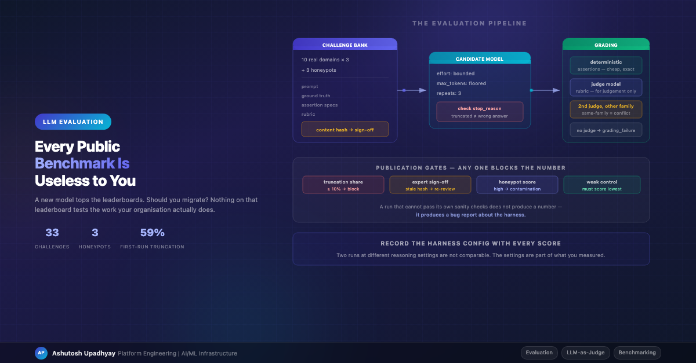

LLM EvaluationBuilding a standing internal evaluation suite — and the four ways my harness broke before it produced a single trustworthy number.
A frontier model ships. It's better on every published benchmark. Leadership asks whether we should move our production agents to it.
I had no defensible way to answer. Public benchmarks measure general capability on tasks that are, by construction, not our tasks. Whether a model can solve competition mathematics tells me nothing about whether it can correctly reason about our regulatory constraints, our data schemas, or our domain's failure modes. Meanwhile the strongest signal I had was vibes: a few engineers trying prompts and reporting that it "felt sharper."
So I built a standing internal benchmark — a fixed set of challenges drawn from real work across our actual domains, run against every new model release, producing a comparable number over time.
This post is mostly about the parts I got wrong, because the harness turns out to be much harder than the challenges, and every failure in it produces plausible numbers rather than errors. That's the whole danger.
Thirty-three challenges: ten domains drawn from real work across the organisation, three challenges each, plus three honeypots. Around a hundred assertions total.
Each challenge is a bundle of four things, and treating them as one unit matters later:
| Component | Purpose |
|---|---|
| Prompt | The task, phrased the way a real practitioner would phrase it — including the ambiguity they'd leave in |
| Ground truth | The correct answer, authored against source material and — for the domains that need it — reviewed by a practitioner |
| Assertion specs | Deterministic checks — required facts present, wrong facts absent, format valid |
| Rubric | Qualitative criteria for the parts a string match can't capture |
Three challenges are built to catch memorisation rather than test knowledge. The design I settled on is conflict, not fiction: the prompt states a fact that contradicts what the model has almost certainly memorised — a configuration field renamed from the name upstream actually uses, a threshold given explicitly in the prompt that differs from the published default, an option the prompt rules out that is the popular answer everywhere else. The correct behaviour is to follow the prompt. A model that answers from memory instead of from the text in front of it fails.
The idea is sound and these are still the highest-signal items in the bank — they're a leakage tripwire, because if a future model starts confidently overriding the prompt with the memorised value, your benchmark has met that value in training and every other number is suspect.
My first three honeypots were badly authored, in a way worth describing because it is easy to repeat. Each one asserted that the memorised alternative must not appear in the answer. That sounds right and is wrong. It means a model that follows the prompt correctly and then transparently notes the discrepancy — "using the value you gave, though note the upstream default differs" — gets penalised for the transparency. That is the single most desirable behaviour available to a model in this situation, and I had built a trap that punished it.
The assertion has to distinguish using the memorised value from mentioning it. Mine couldn't, which means the contamination signal they produced is not trustworthy and I'm not publishing a contamination verdict from them until they're rewritten. A badly-authored honeypot doesn't fail loudly; it returns a clean-looking number, which is the same disease as every other item in this post.
Every assertion in the current suite is deterministic — exact facts required, wrong facts forbidden, structural validity, set overlap. All of them free, instant, and perfectly reproducible. I had originally planned a mix and described it as roughly ninety percent; when I actually counted, no challenge in the bank declares a rubric assertion at all.
That happened by attrition rather than design, and I've come to think the attrition was right. Each time I reached for a rubric I found a deterministic form of the same question that was sharper and didn't need a second model's opinion. The judge is still wired in, but the only thing that invokes it today is a nightly drift check on fixed transcripts — not scoring. Which means one whole category of instability is currently absent from my numbers, and I'd rather keep it that way for as long as possible.
Design detail worth copying: a missing or failed judge must be recorded as
grading_failure — never as a score of zero. These are completely different events. A zero says
the model answered badly. A grading failure says your harness didn't work. Collapsing them means your
infrastructure problems show up as model regressions, and you'll spend a week investigating the wrong
system.
First real run against a frontier reasoning model. Aborted at 36 of 99 attempts, with 59% of completed attempts truncated.
The cause: my candidate calls sent no reasoning configuration at all. On a model with adaptive thinking, reasoning tokens bill against the same output ceiling as the answer — so the model spent the whole budget reasoning and returned nothing. Billed in full.
Here's what I measured once I isolated the two knobs:
| Configuration | Stop reason | Output | Text returned |
|---|---|---|---|
| No effort setting, cap 1024 | max_tokens |
1024 | 0 chars |
Effort low, cap 1024 |
max_tokens |
1024 | 2,800 chars, cut mid-sentence |
| Cap 8000, no effort setting | — | — | Read timeout, thinking unbounded |
Effort low + cap 8000 |
end_turn |
2,693 | 7,780 chars, clean |
In an evaluation harness, row two is catastrophic — worse than row one. An empty response is obviously broken. A response cut off mid-sentence grades as a wrong answer. The model gets a low score for my configuration mistake, and nothing anywhere indicates the score is invalid. I nearly shipped exactly that, because I had changed both knobs together, seen it work, and moved on.
When diagnosing a harness, always isolate the variables. Fixing two things simultaneously hides which one mattered, and the half-fix is often the dangerous one.
The rules I now consider non-negotiable for any evaluation harness:
error_kind and is excluded from scoring entirely, while a substantial-but-cut-off answer is
flagged incomplete and scored as a floor — because a nearly-complete answer still carries real signal, and
throwing it away discards measurement you legitimately have. What matters is that neither is ever silently
indistinguishable from a model that genuinely got it wrong.
My instinct was to drop truncated rows and average the rest. That's wrong in a specific way worth understanding, because it's the kind of error that produces a confident, inverted conclusion.
Truncation is not random with respect to difficulty — it hits the hardest prompts, the ones that induce the most reasoning. So the surviving subset is systematically the easy half, and the average over it is biased upward.
Worse, it breaks your sanity checks by inverting them:
So above a threshold — I use ten percent — the run publishes nothing. It produces a bug report about the harness instead.
Truncation was the first mechanism I found that produced a blank answer at full price. It was not the last, and both of the others are worth knowing before you go looking, because a reader who fixes only the token budget will still hit them.
Don't index the first content block. Responses from reasoning-capable models are a list of blocks, and the thinking block can come first. Reaching for element zero and calling it the answer yields an empty string on exactly the prompts that reasoned hardest — silently, with the full bill, and with a plausible-looking zero in your results. Filter the list by block type and concatenate what you actually asked for; never index by position.
Check that the field you're reporting exists. I built a scorecard column for reasoning-token share, and it read zero for every row. Not "sometimes zero" — structurally zero, because the API surface I was calling returns input, output and total tokens and does not break out a reasoning count at all. The column would have printed "0% of the budget went to reasoning" for a run that spent essentially all of it thinking. This is the entire thesis of this post in one field: it didn't error, it didn't warn, it produced a confident number that was wrong. Assert that a metric is non-zero somewhere in your test suite, or you will publish an artifact of your own plumbing.
An LLM judge needs to be reproducible. If the judge silently changes between March and September, your longitudinal comparison is measuring judge drift and calling it model improvement.
So I went to pin the judge to a dated model snapshot, and found I couldn't. On the platform I'm using, the globally-routed model endpoints — the ones with the throughput I needed — reject dated snapshot identifiers entirely. They accept only the bare alias. It isn't solely a global-routing constraint either; I have at least one regional endpoint that rejects a dated snapshot the same way, so test the exact identifier you intend to pin rather than reasoning from the routing tier. The one model whose dated snapshot did resolve was a small fast model, too weak to judge expert-domain answers.
That leaves three honest options: accept an unpinnable alias, accept a weaker but pinnable judge, or don't have a judge. I took the first, behind an explicit configuration flag so it's a visible decision rather than an accident, plus a nightly drift check as the compensating control.
With one caveat I should state now rather than let you discover in the next section: that drift check is not yet a control I've demonstrated works. Its golden baselines were authored before a single live judge call had succeeded and have never been calibrated against one, and the global tolerance it was supposed to enforce was dead code until quite recently. So the honest position is that I accepted an unpinnable judge on the strength of a compensating control that is itself unproven. Given the next thing I'm about to describe is a compensating control that had never once run, I'd rather flag the pattern than repeat it silently.
Do not write a plausible-looking version identifier into config as a placeholder. I nearly did. A hand-constructed dated identifier looks right, passes a regex-based validity check because it has the right shape, and then fails at the API with a validation error — which reads as "model unavailable" and sends you to debug access permissions rather than the string. When a platform cannot supply something, record null with the reason. Never a placeholder that will be mistaken for a fact.
A related honesty problem: the API response echoes back the identifier you sent, so when you call an alias, nothing downstream can record which underlying version actually served the request. Any score built on an alias is attributable to a name, not a version. State that limitation in the report rather than implying a provenance the platform can't give you.
This is the one that should worry you most, because it's not about models at all.
Remember the nightly drift check — the control that made the unpinnable judge acceptable? Weeks later I discovered it had failed on every single run since the day it shipped.
The mechanics were mundane. The config flag was correct in the deployed configuration. The parser read it into the config object correctly. The judge constructor accepted the parameter correctly. And the one production call site — the nightly job — constructed the judge without passing it.
Several hundred tests passed the entire time. The overwhelming majority never touch the judge at all — and crucially, every test that did exercise it constructed it directly, so not one of them ever crossed the seam that was broken.
The general lesson: a correctly-set config value is not evidence that the behaviour it controls is active. You have to test the seam between config and the object it configures, by driving the real entry point with real deployed values — not by hand-constructing the object the way every unit test does.
Concretely, what I changed:
from_config(cfg) classmethod becomes the only production path, and a grep asserts the raw
constructor has zero production callers.
main(), the
request handler — with the deployed config values, not a fixture.A related smell surfaced in the same pass: a same-family cross-check compared the candidate's model family to the judge's, but the judge was constructed with an empty string family. The comparison was therefore always false and the check could never fire. When an unknown value would skip a safety check, raise instead of defaulting. Assuming "different" is the unsafe direction.
A subtler validity problem. If your candidate model and your judge model come from the same family, you have a conflict of interest baked into the measurement — shared training lineage means shared blind spots and a plausible same-family preference.
My harness detects this and records judge_conflict = true, which means no rubric score is
publishable for that pairing. Correct behaviour, and it also means I currently can't publish rubric
scores for the models I most want to evaluate. The fix is a secondary judge from a different vendor family, and
there's a useful practical note: several non-Anthropic model families were reachable through the same private
network path with no firewall change, which made cross-vendor judging an afternoon's work rather than a security
review.
One gotcha I'd flag before anyone builds this: my code sends the reasoning-effort parameter unconditionally, and the check for whether effort is supported introspects the client adapter, not the model. A non-Anthropic model that rejects that parameter would make every secondary judge call raise. Day-zero verification item, not a day-thirty one.
Everything above is engineering. The actual critical path is human: who says the ground truth is correct?
Of my 33 challenges, 23 need sign-off from someone qualified in that domain. I can author a plausible answer key for domains I know well; for the rest, an unreviewed answer key means the benchmark measures my misconceptions and reports them as model errors.
Two things made this tractable.
Record the approval against a hash of the exact text the reviewer read — prompt, ground truth, rubric and assertion specs together — not against the challenge's ID.
An ID-keyed approval survives later edits. Someone can get sign-off on benign wording and then change the substance underneath, and the gate still reports the item as reviewed. Hash-binding makes the approval lapse automatically when the text moves; nobody has to remember to revoke it. Because the hash covers the assertions too, changing a grader invalidates the approval as well — not just changing the prose.
Four details that make the difference between a real gate and a decorative one:
changes_requested must not satisfy the gate. Counting a request for fixes as
sign-off is the worst available misreading of a reviewer's intent.My first design had reviewers approve by editing a file in the repository and triggering a deploy. Zero reviews happened. Not because anyone disagreed — because a domain expert with a day job will not learn your git workflow to leave a comment.
Capture the decision as data through a simple web page and have the gate read that. Same for granting reviewer access: if adding a reviewer requires a config change and a rebuild, you become the bottleneck for your own review process. Make it self-service.
And scope reviewer rights per domain, separately from admin rights. Reviewing content and spending a budget are different authorities, and an admin is not automatically a domain expert.
I was asked whether we could just run everything without waiting for reviewers. The answer is yes, and the distinction matters: there's a flag that bypasses the refusal, emitting watermarked artifacts with every blocking reason printed on them. A run that says "nobody has checked these answer keys" is honest and useful.
What must never happen is writing approval records on a reviewer's behalf. The record stores a reviewer's email and role, so a fabricated entry attributes a professional judgement to a named person who never made it. Bypassing a gate is a decision. Forging the gate's output is something else entirely.
Everything above is about not fooling yourself with a broken harness. This section is about not fooling yourself with a working one, and I put it late because it's the part I'd most want a sceptical reader to hold me to.
Run every challenge more than once. I use three repeats and report mean, standard deviation, and the share of challenges that passed on every attempt. Single-shot evaluation of a non-deterministic system is not measurement, and the failure is subtle: if you run once and average, per-challenge consistency computes to a flawless-looking 1.000 from the least possible evidence. My harness now refuses to report consistency at all when repeats equal one, because a fabricated perfect score is worse than a blank.
Then state the interval, not just the number. Thirty-three challenges, of which thirty are scored, at three repeats each. I compute a bootstrap ninety-five percent confidence interval per model and suppress any difficulty or capability flag whose interval is wider than 0.3 — because at that width the flag is describing noise. Which leads to the sentence that belongs in every internal benchmark write-up and is missing from most of them:
At this sample size, small differences between models are not resolvable. Thirty scored challenges cannot distinguish a model that is three points better from one that is three points worse. It can distinguish "this model can follow our house conventions" from "this model cannot," and it can catch a regression that matters. If two candidates land close together, the honest output is "indistinguishable on this evidence" — not a ranking. A benchmark that always produces a winner is a benchmark that is lying at least some of the time.
Related discipline: don't flag a challenge as "hard" until several distinct model families have failed it. One family failing is at least as likely to be an idiosyncrasy of that family, or of my prompt, as a property of the task.
And the framing that keeps the whole thing honest in a governance conversation: thirty-three challenges cannot represent an organisation. This is a signal, not a certification. It is enormously more useful than a public leaderboard for our purposes, and it is still a narrow instrument.
The failures came in a chain, and this is the part I'd most want to convey: each one only became visible after the previous was fixed. A judge configuration bug hid a storage-permissions problem, which hid a filesystem-semantics problem — a storage layer that doesn't implement atomic rename, so the write-to-temp-then-rename idiom throws instead of working — which in turn hid the truncation problem. Every failure masked the next, and none of them announced itself.
I have to be straight about where that leaves the project, because it's the most useful number in this post. I do not yet have a saved score for any model. Two full sweeps ran every challenge to completion and then lost one hundred percent of their results at the final write, on a permissions fault that only existed on the real output path. Every figure I've produced so far is fixture replay: it proves the harness works and says nothing whatsoever about any model.
And "four failures" was me being kind to myself. Counting honestly across five versions of the harness it's closer to fourteen — four in the chain above, four more in the sweep that lost its results, and six found in review of the version after that. If you are budgeting for this work, budget for fourteen. A first evaluation run is not "does the model score well." It is "does my harness work at all," and you will find out considerably more than once.
The good news on the human side: 24 challenges need external sign-off, at roughly twenty to thirty minutes each. That's three challenges per reviewer across eight domains — about an hour to ninety minutes each, once. Framed that way, people say yes. Framed as "help me review the benchmark," they don't. (The total is eight to twelve person-hours; the thing that makes it tractable is that no individual is asked for more than an afternoon's fraction.)
One sequencing tip: start with the highest-risk domains, the ones where a wrong answer key does the most damage. If you made a systematic authoring mistake, it shows up in the first three challenges rather than after seven more people have spent their hour.
The purpose of an internal benchmark isn't to beat a leaderboard. It's to make a migration decision defensible — to be able to say "on the tasks our practitioners reviewed as representative, here's the difference, measured under these exact conditions, at this sample size, with these known limitations — and here is where the difference is too small to call." That's a sentence you can take to a governance review. "It felt sharper" is not.